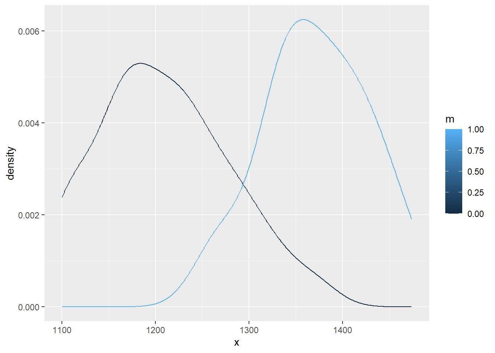

library(tidyverse)
library(rstan)
library(truncnorm)Warning: package 'truncnorm' was built under R version 4.4.1library(tidyverse)
library(rstan)
library(truncnorm)Warning: package 'truncnorm' was built under R version 4.4.1This document summarizes different generative classifier models for a two-class response and a continuous predictor, with the same standard deviation for both classes, and truncated scores. We discuss the mathematical structure of these models, how they differ, and provide code for fitting them using Stan and R.
In this model, we assume that both classes follow a normal distribution with the same standard deviation but different means. The prior probabilities for both classes are equal.
\[ P(x | m=0) = \frac{1}{\sqrt{2 \pi \sigma^2}} \exp\left(-\frac{(x - \mu_0)^2}{2\sigma^2}\right) \]
\[ P(x | m=1) = \frac{1}{\sqrt{2 \pi \sigma^2}} \exp\left(-\frac{(x - \mu_1)^2}{2\sigma^2}\right) \]
Given equal priors, the posterior probability is:
\[ P(m=0 | x) = \frac{P(x | m=0)}{P(x | m=0) + P(x | m=1)} \]
stan_gen01 <- stan_model(file = 'gen01.stan')# Simulate some data
set.seed(123)
N0 <- 100
N1 <- 20
mu0 <- 1200
mu1 <- 1400
sigma <- 80
x <- c(rnorm(N0, mu0, sigma), rnorm(N1, mu1, sigma))
x <- pmin(pmax(x, 1100), 1500) # truncate
m <- c(rep(0, N0), rep(1, N1))data.frame(x,m) |>
ggplot() +
aes(x=x,group=m, col=m) +
geom_density()
# Prepare data for Stan
stan_data <- list(N = N0 + N1, x = x, m = m)
# Fit the Stan model
fit <- sampling(
stan_gen01,
data = stan_data,
chains=4
)
# Extract results
print(fit, pars = c('mu0', 'mu1', 'sigma', 'm50'))Inference for Stan model: anon_model.
4 chains, each with iter=2000; warmup=1000; thin=1;
post-warmup draws per chain=1000, total post-warmup draws=4000.
mean se_mean sd 2.5% 25% 50% 75% 97.5% n_eff Rhat
mu0 1209.71 0.11 6.69 1196.79 1205.30 1209.76 1214.23 1222.64 3489 1
mu1 1369.39 0.24 15.06 1340.52 1359.09 1369.45 1379.58 1397.93 3885 1
sigma 67.38 0.08 4.44 59.13 64.44 67.21 70.18 76.70 3183 1
m50 1289.55 0.13 8.31 1273.04 1283.93 1289.62 1295.14 1305.50 3921 1
Samples were drawn using NUTS(diag_e) at Tue Jul 16 12:53:28 2024.
For each parameter, n_eff is a crude measure of effective sample size,
and Rhat is the potential scale reduction factor on split chains (at
convergence, Rhat=1).This model extends the simple generative classifier to multiple populations, each with its own means for the two classes, but sharing common hyperparameters.
For population \(j\):
\[ P(x | m=0, j) = \frac{1}{\sqrt{2 \pi \sigma^2}} \exp\left(-\frac{(x - \mu_{0j})^2}{2\sigma^2}\right) \]
\[ P(x | m=1, j) = \frac{1}{\sqrt{2 \pi \sigma^2}} \exp\left(-\frac{(x - \mu_{1j})^2}{2\sigma^2}\right) \]
\[ \mu_{0j} \sim \text{Normal}(\mu_{0, global}, \tau) \]
\[ \mu_{1j} \sim \text{Normal}(\mu_{1, global}, \tau) \]
\[ \sigma \sim \text{Normal}(0, 50) \]
stan_gen02 <- stan_model(file = 'gen02.stan')# Simulate some data
set.seed(123)
N <- 200 # Total number of data points
J <- 5 # Number of populations
pop <- sample(1:J, N, replace = TRUE)
# Generate data for each population
mu0_global <- 1200
mu1_global <- 1400
tau <- 50
sigma <- 30
mu0 <- rnorm(J, mu0_global, tau)
mu1 <- rnorm(J, mu1_global, tau)
x <- numeric(N)
m <- rbinom(N, 1, 0.5)
for (i in 1:N) {
if (m[i] == 0) {
x[i] <- rtruncnorm(1, a=1100, b=1500, mean=mu0[pop[i]], sd=sigma)
} else {
x[i] <- rtruncnorm(1, a=1100, b=1500, mean=mu1[pop[i]], sd=sigma)
}
}
# Prepare data for Stan
stan_data <- list(
N = N,
x = x,
m = m,
J = J,
pop = pop
)
# Fit the Stan model
fit <- sampling(
stan_gen02,
data = stan_data,
chains=4
)Warning in .local(object, ...): some chains had errors; consider specifying
chains = 1 to debughere are whatever error messages were returned[[1]]
Stan model 'anon_model' does not contain samples.
[[2]]
Stan model 'anon_model' does not contain samples.
[[3]]
Stan model 'anon_model' does not contain samples.
[[4]]
Stan model 'anon_model' does not contain samples.# Extract results
print(fit, pars = c('mu0', 'mu1', 'sigma', 'm50', 'global_m50', 'p_m0_given_x', 'p_m1_given_x'))Stan model 'anon_model' does not contain samples.# Extract samples
posterior <- extract(fit)Stan model 'anon_model' does not contain samples.# Example: Calculate the mean posterior probabilities for the first data point
mean(posterior$p_m0_given_x[,1])Warning in mean.default(posterior$p_m0_given_x[, 1]): argument is not numeric
or logical: returning NA[1] NAmean(posterior$p_m1_given_x[,1])Warning in mean.default(posterior$p_m1_given_x[, 1]): argument is not numeric
or logical: returning NA[1] NA